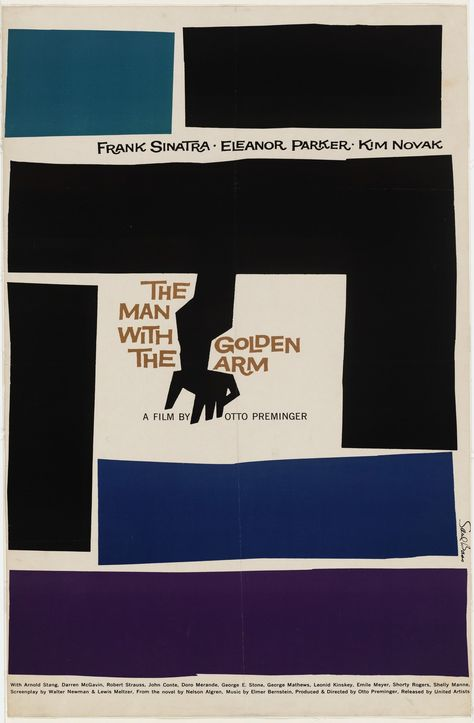
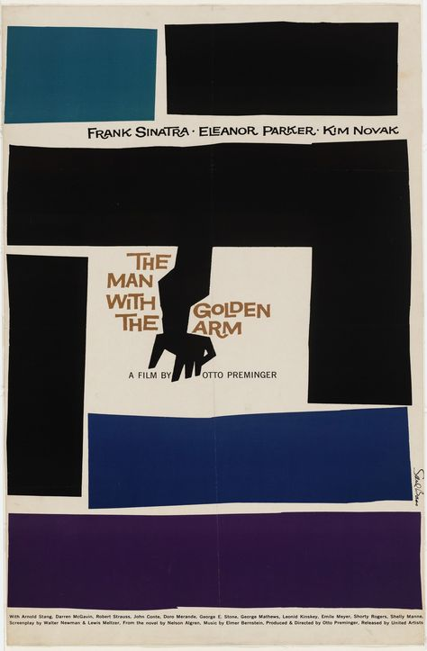

The Man with the Golden Arm's Title Sequence
‘The Man with the Golden Arm’ tells the story of a jazz musician who spends the film battling with his volatile addiction to heroin. The film’s title sequence depicts an arm outstretched, in a rather distorted and exaggerated manner, highlighting the effects that drugs have on a person. The sequence perhaps could have been influenced by German expressionism, who’s defining characteristics are distortion and exaggeration. German expressionism would use internal conflicts and emotions a person was feeling, and make their outer environment reflect their state of mind. This was to convey to the viewer to feel how the subject within the piece felt, whether that be paintings, film, or sound. One defining characteristic of German expressionist film, is the use of asymmetry and nonparallel lines, to showcase the inner turmoil of a character and how reality for them has become warped. The silent film ‘The Cabinet of Doctor Caligari’ (1920), directed by Robert Weiner, is regarded as the quintessential German expressionist film. Since its visual style is so stretched and twisted, telling the audience that there is no order or structure in the world this story takes place in.
Much like the mind of the protagonist in The Man with the Golden Arm, The title sequence, itself makes great use of nonparallel lines, to showcase how the drugs can manipulate the mind. Bass presents sets of lines throughout, to likely represent several scenarios and themes played throughout the movie. The lines are used to structure and frame the credits that appear on screen, though the fact that they’re at a slight angle, leaves the audience dissatisfied with the composition. It’s been scientifically proven that the human eye likes to see symmetry and even spacing. In the analytical novel, ‘The Accidental Universe: The World You Thought You Knew’ by Alan Lightman, he writes about how we as humans, find comfort in finding symmetry and even spacing in the world.
"The search for symmetry, and the emotional pleasure we derive when we find it, must help us make sense of the world around us, just as we find satisfaction in the repetition of the seasons.” (Lightman, 2014)
This is perhaps the angle Bass went for, when constructing The Man with the Golden Arm’s title sequence. Which was to leave the audience with a feeling of instability and caution while viewing the opening credits. Which is further evidence of Bass’s desire to have the film viewing experience start right as the opening credits play. The lines depicted in the title sequence could also be a visual reference to prison bars, as the protagonist, Frankie, was previously in prison for his addiction before the film begins. Also, throughout the film, Frankie is guilt tripped into staying with his falsely wheel chair bound wife, Zosh, as he was the cause of her injury. Thus, also trapping him in a loveless marriage and unable to move on with his life. The use of black and white as the only two colours, could simply be seen as a product of the whole film being in black and white. But it could also be interpreted to represent the literal highs and lows of a drug addict’s lived experience. The stark contrast of the high, intense feeling of drugs, represented by white, and the bad comedown from those drugs, being represented with black. (Bass and Kirkham, 2011)
 

Figure 5 & 6:(Bass S., 1955.The Man with the Golden Arm Title Sequence) (Bass., 1955. The Man with the Golden Arm Film Poster)